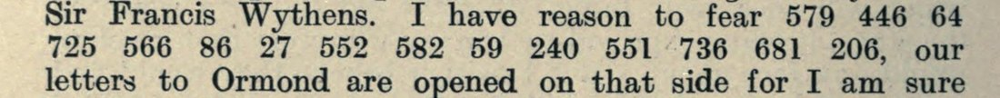
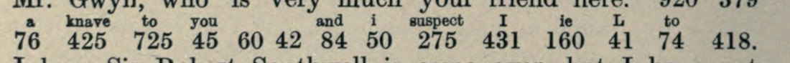

At a glanceExternal key matched · partial (50% of the cipher)
- The letter
- James Butler, Duke of Ormond, Lord Lieutenant at Dublin, to his son Richard Butler, Earl of Arran, in London, 24 January 1677/8. Two names and a clause about the Scottish preacher William Douglas are in figures, “a trial whether you are skilful in deciphering”.
- Where
- National Library of Ireland, Ormonde papers (letters of 1665–80, MSS 2335–2362; bundle catalogued as MS UR 006261), volume and folio not identified. Printed in HMC, Calendar of the MSS of the Marquess of Ormonde, new series iv (1906), p. 93. Catalogue no. 353 of this project (listed with no decipherment known), now removed from the catalogue; Cryptoole XX1678-1. Not on DECODE.
- The cipher
- Twenty different figures from 32 to 732. They are the numbers of the Ormond–Longford cipher of 1680, as S. Tomokiyo reconstructed it, each raised by 7: two regular alphabets, then syllables and words in alphabetical order.
- How it was deciphered
- Malcolm McBratney found the offset. Of 301 offsets on the 1680 key and on the next Longford key, only −7 spells a word of five letters or more (“credible”). The values were checked on the printed glosses of 1680.
- What it says
- “If what he says of [445] and [342] be true, [726] and King are in a [700] [720]; but it seems to Ormond not credible.”
- Still open
- Five figures with no value in print; four values taken from the order of the key and one (King) from context; no other text in this numbering to test the offset on.
- Credit
- The key is S. Tomokiyo’s reconstruction (Cryptiana). The offset, the gloss check and the controls are Malcolm McBratney’s (Brisbane), working with AI agents; by his account the offset was first noticed by one agent and then checked independently by another.
01 The letter
Ormond wrote from Dublin to his son Arran in London on 24 January 1677/8. The letter is printed in the Historical Manuscripts Commission’s calendar of the Ormonde papers, from the Kilkenny archive now in the National Library of Ireland; the manuscript has not been seen. Most of it is in clear. The passage in figures is about Mas. William Douglas, a Scottish nonconformist preacher brought to Lord Granard at Belfast in December 1677, who told of a covenanting rising and hidden arms; searches in Edinburgh and Glasgow found nothing. Ormond had had him “a week with me, but he is still a greater mystery to me”, and goes on:
If what he says of 445 and 342, be true 726, 91, 33, 425, 93, 58, 384, 54, 700, 720 but it seems 732, 573, 526, 32, 643, 214, 55, 440. This is a trial whether you are skilful in deciphering, else it might have been written in plain letters.
No gloss is printed. Granard, writing the next day, calls Douglas “a mountebank”, and Ormond reports on 29 January that Colonel Jeffreys says Douglas is “a notorious cheat”. Arran answered on 5 February that he would not risk missing the post by deciphering it that night, “but you may depend upon me so far as this cipher goes which is betwixt us”. The code Arran used in his own letter of 9 February is a two-letter code, so it cannot be this one.
02 The key and the offset
In 1680 Ormond, the Earl of Longford and Arran used a numbered code whose figures the calendar prints with interlinear equivalents (n.s. v, pp. 454 ff.). S. Tomokiyo rebuilt its table from them on Cryptiana: two series of numbers, 23–46 and 47–70, for the letters in regular order, then syllables and words in alphabetical order up to about 840, then names. He noted the 1678 passage as “an unidentified cipher?” that looks similar; a trial with the table as it stands, left in a comment on his page, gave nothing, and this project’s attempt of October 2026 came to the same result. No offset is tried on his page; that the offset is new rests on the contributor’s prior-art search of 13 November 2026, which could not check cipher-lab, the HMC Sixth Report, DECODE or the manuscripts.
On 13 November 2026 Malcolm McBratney showed that the table fits once every 1678 figure is reduced by 7: 440 becomes 433, 55 becomes 48, and so on. With Tomokiyo’s table exactly as published this gives a value to 14 of the 20 figures; with the table at offset 0 only 6 do.
- The word test. Over offsets from −150 to +150 on the 1680 key and on the second Longford key (602 trials), only −7 on the 1680 key spells a word of five letters or more across three or more figures: “credible”, over five figures, right after the clear words “but it seems”. Of 2,000 random sets of figures with the same shape, each tried at its best of the 602 key–offset pairs, 6 reach a word of eight letters; of 3,000 shuffles of the real figures at −7, none do. The third Longford key (n.s. vii) fits nowhere.
- The hit count is weak. 14 of 20 figures with a value at the best offset was reached by 5 of 2,000 random sets, so the number of hits alone proves little.
- Checked again here. The contributor’s scripts give the same figures when run again. A second decoder, written here from Tomokiyo’s table image, gives the same 14 values. A control with another word list (English words of six letters or more) also picks out −7 and no other offset; 1,000 random sets reached eight letters 0 times. The word measure was chosen after “credible” had been seen, so these figures support the identification but are not a test declared in advance. No other passage in the 1678 numbering is known to test the offset on.

Each value used was checked on the page images of n.s. v (pp. 454, 469, 479, 486 and 498). Ten of the twenty figures carry a value attested there: an(d) 91, d 33, ar 93, in 384, to 732, Ormond 573, not 526, re 643, di 214, b 55 (1678 numbers). Three of them have conflicting glosses: 1680 number 84 is printed “and” on p. 486 and “on” on p. 469; 26 is “di” on p. 469 but d in “hard” on p. 454; 566 is glossed “Dor” on p. 454 (most likely D[uke of] Or[mond]). On p. 486 “and” stands over 84 alone, with “i” over the next figure; reading 84 as an and the run 91 33 as an-d is the contributor’s choice, made from the alphabetical place of 84 between am 83 and ar 86. The group reads “and” either way.

03 The reading
Clear words in braces, figures with no value in square brackets, values with no gloss behind them in angle brackets:
{If what he says of} [445] {and} [342], {be true} [726] and ‹King› ar‹e› in ‹a› [700] [720]; {but it seems} to Ormond not ‹c›redib‹le›.
The second run completes the clear sentence: “but it seems to Ormond not credible”, with Ormond’s own name standing where “me” is meant, as 566 stands for Ormond in Longford’s letter of 1680. The first run reads only around its holes: if Douglas is right about two people (445 and 342), someone (726) “and King are in a” something (700 720). King is not glossed for 1680 number 418; it rests on its place between ke 414 and knave 425 and on Longford’s letter of 6 November 1680 (p. 479), where Arran’s “discourse with 418” fits his private audience with the King (Arran, 30 October 1680, p. 469). The letters e, a and c come from the regular alphabets and le from the order of the syllables (l 431, li 434, lo 435); none is glossed.
A value counts here only when the print attests it: 10 of the 20 figures give attested sense (50%), so the extent is partial, under the bar of 95%. The contributor counts 15 of 20 (75%) as given a value, with the four values from the key’s order and King.
| 1678 | 1680 | Value | Evidence |
|---|---|---|---|
| 445 | 438 | — | no gloss; after lo 435 |
| 342 | 335 | — | no gloss; before h 336 |
| 726 | 719 | — | no gloss; between sea 718 and t 721 |
| 91 | 84 | an(d) | gloss “and” p. 486; “on” p. 469 |
| 33 | 26 | d | “hard” over 337 634 26, p. 454 |
| 425 | 418 | ‹King› | context only (p. 479) |
| 93 | 86 | ar | “Portsmouth are friends” over 1039 86 237 301 (237 = e), p. 454; rendering p. 498 |
| 58 | 51 | ‹e› | regular alphabet 47–70 |
| 384 | 377 | in | gloss p. 454 |
| 54 | 47 | ‹a› | first place of alphabet 47–70 |
| 700 | 693 | — | no gloss; among the s entries |
| 720 | 713 | — | no gloss; among the s entries |
| 732 | 725 | to | gloss p. 454 |
| 573 | 566 | Ormond | rendering p. 498; gloss “Dor” p. 454 |
| 526 | 519 | not | gloss p. 454 |
| 32 | 25 | ‹c› | regular alphabet 23–46 |
| 643 | 636 | re | glosses pp. 454, 469 |
| 214 | 207 | di | gloss p. 469 |
| 55 | 48 | b | “by” over 48 45, p. 454 |
| 440 | 433 | ‹le› | order of the syllables; “pal” over 581 433, p. 454 |
04 What remains open
- Figures 445, 342, 726, 700 and 720 (1680 numbers 438, 335, 719, 693, 713): no gloss anywhere in the 1680 letters, and none in Tomokiyo’s table. Their places in the alphabetical order give only a first letter: an l word, a g or h word, and three s words.
- The values e, a, c, le and King: likely, but not attested by a gloss.
- Whether the offset of 7 holds over the whole table: twenty figures with no repeats, and no other passage in the 1678 numbering in the calendar.
- The manuscript: the letter as sent, or Ormond’s copy, may carry a gloss. The Ormonde papers in the National Library of Ireland are not digitised, and Arran’s papers among the Carte manuscripts in the Bodleian Library have not been seen.
Full texts
The transcription and the decryption of every document on this page, so that the reading can be used and checked. Short files are shown here; all are in the repository.
Ormond to Arran, 24 January 1677/8 (HMC n.s. iv p. 93) read in part
Ormond, Lord Lieutenant at Dublin, writes to his son Arran in London about William Douglas, a Scottish preacher whose tale of a covenanting rising had come to nothing. Two names and a clause are in figures, set as a trial of Arran's skill in deciphering; the figures say that if Douglas is right someone and the King are in some danger or plot, 'but it seems to Ormond not credible'.
Builds coherent sentences, but under the read bar of 95% of words read as sense (50% here); the holes are marked in the reading.
Transcription
# Ormond to Arran, 24 Jan 1677/8. Source: HMC Calendar of the MSS of the Marquess of Ormonde, n.s. IV (1906) p.93
# Image: https://archive.org/download/calendarofmanusc04greauoft/page/n122.jpg (2592x4374), crop work/crop_figs1.png
# Transcriber: b197 (Claude), independent reading of the page image at full size. Clear text in braces. No '?' needed.
{If what he says of} 445 {and} 342, {be true} 726, 91, 33, 425, 93, 58, 384, 54, 700, 720 {but it seems} 732, 573, 526, 32, 643, 214, 55, 440. {This is a trial whether you are skilful in deciphering, else it might have been written in plain letters.}
# Figures in order (20): 445 342 726 91 33 425 93 58 384 54 700 720 732 573 526 32 643 214 55 440Decryption
{If what he says of} [445] {and} [342] {, be true} [726] an d King ar e in a [700] [720] {but it seems} to Ormond not c re di b le {. This is a trial ...}Reading
# Reading of Ormond to Arran, 24 January 1677/8 (HMC Ormonde n.s. iv p. 93), with Tomokiyo's Ormond-Longford Cipher 1 (1680) table, every figure minus 7.
# Clear words of the letter in braces. [figure] = no value. Values in angle brackets are not attested by a gloss: <e> <a> <c> <le> interpolated from the key's regular order, <King> from context only. They count as holes (strict share 10/20 = 50%).
{If what he says of} [445] {and} [342], {be true} [726] and <King> are in <a> [700] [720]; {but it seems} to Ormond not credible.
# Groups: 726=[?] 91=an(d) 33=d 425=<King> 93=ar 58=<e> 384=in 54=<a> 700=[?] 720=[?] | 732=to 573=Ormond 526=not 32=<c> 643=re 214=di 55=b 440=<le>Key: key_shifted.tsv
05 Sources
- HMC, Calendar of the Manuscripts of the Marquess of Ormonde, new series iv (1906), pp. 75, 90, 92–107 (the letter p. 93), and v, pp. 454, 469, 479, 486, 498: Internet Archive calendarofmanusc04greauoft (leaves n122, n1235, n1250, n1260, n1267, n1279).
- S. Tomokiyo, “English Ciphers during the Restoration Period”, Cryptiana, charlesii2.htm (2024): the Ormond–Longford Cipher 1 (1680) table and the note on the 1678 passage.
- National Library of Ireland, collection list A017 (Ormonde papers, MSS 2335–2362) and NLI Sources record MS UR 006261.
- Malcolm McBratney, pull request #526 (13 November 2026): the offset, the gloss check, the controls (
targets/ormond1678/identification/).
Transcription, key, decoding, gloss check and controls: targets/ormond1678.
Cite this page
Malcolm McBratney and Daniel Bourdeau, “Ormond to his son Arran, 24 January 1677/8: twenty figures set as a trial”, Cyphersolver, posted 13 November 2026, https://cyphersolver.com/ormond1678.html.